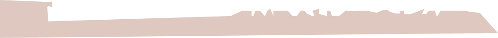
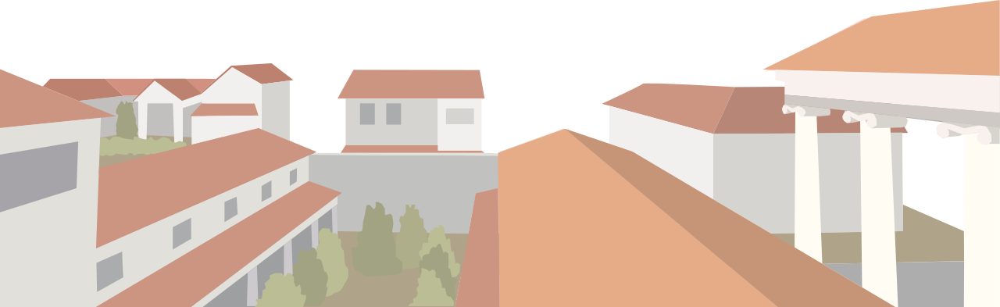
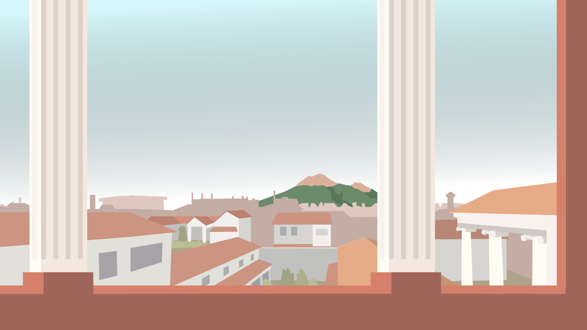
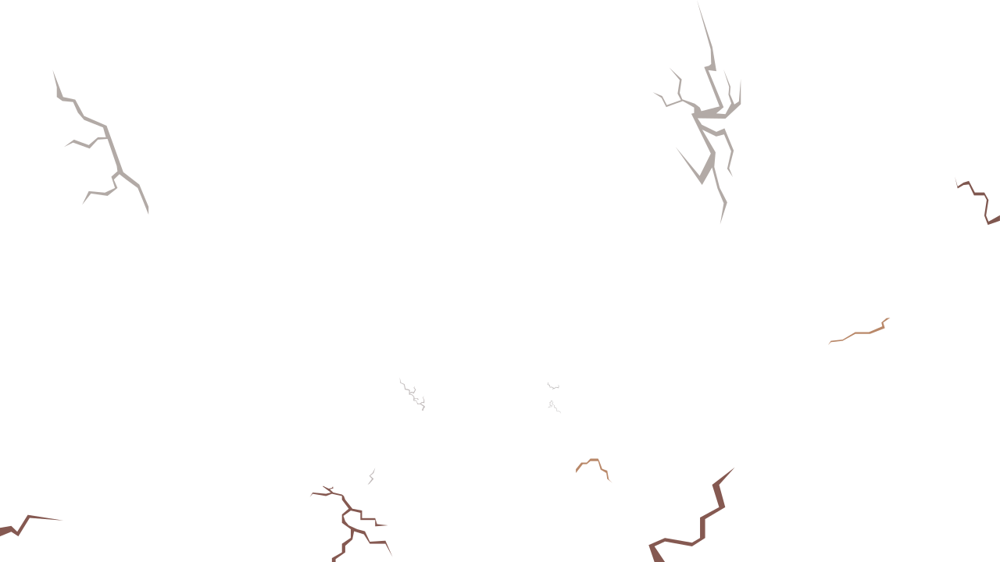
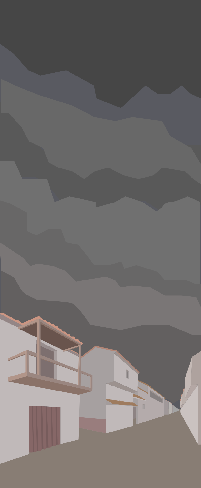
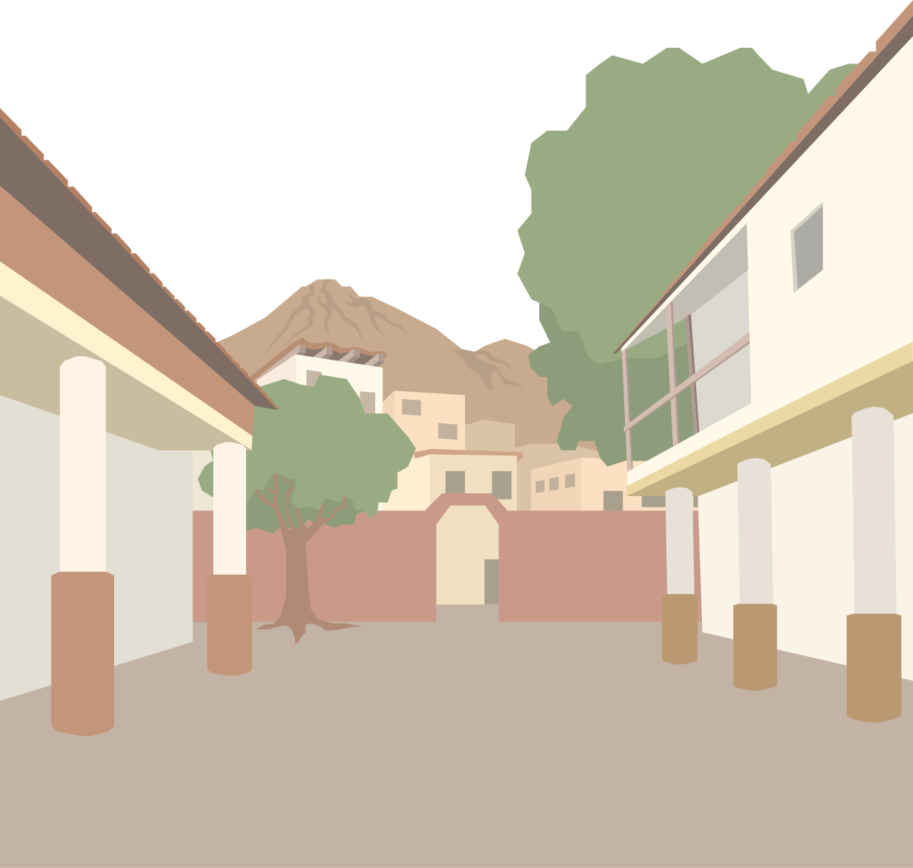
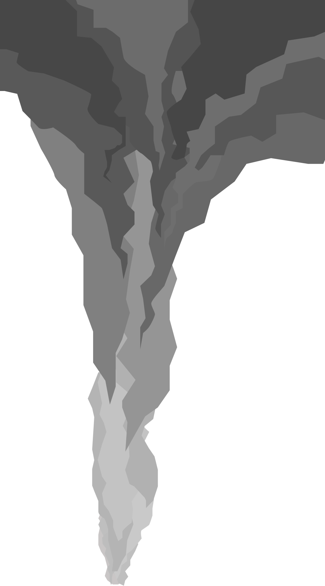

Nous sommes à Pompéi en Italie en l'an 62 après Jésus Christ
  Les habitants ne savaient même pas que le Vésuve était un volcan. Il semblait être une montagne ordinaire...
 Il y eut un très grand tremblement de terre qui endommagea la ville. Personne ne se doutait que les secousses seraient des précurseurs d'une grande catastrophe.
 Pompéi, l’an 79 après J-C Depuis le séisme de 62, les secousses sont courantes... mais personne ne s’inquiète...
  précédé des quelques secousses, l’éruption débuta vers 13h
Une colonne de cendres s’éleva à plus de 20km de hauteur, assombrissant le ciel.
Le lendemain matin, un souffle brûlant, un nuage de gaz et de cendres surchauffées, le nuage ardent dévala les pentes du Vésuve à une vitesse entre 100 et 300 km/h, rendant toute fuite impossible.